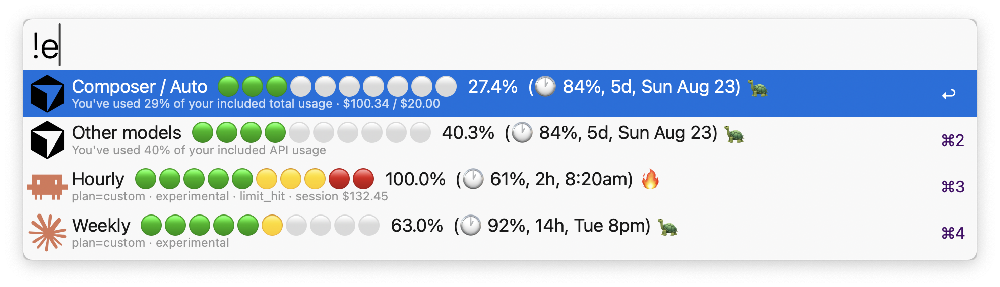

Glanceable on iPhone
Check quotas before a long session — from a widget or the app — without hunting through web dashboards.
iPhone companion to the Alfred workflow
The same overview as the Alfred workflow — on iPhone, Home Screen widgets, and Apple Watch.
Motivation
You bounce between Cursor and Claude. You don’t want to open two billing pages mid-task just to see how much quota is left.
Check quotas before a long session — from a widget or the app — without hunting through web dashboards.
Cursor, Claude, and Grok Bot in the same rows you already know from Alfred.
Composer/Auto vs other models; hourly vs weekly — not a flattened “tokens used” blob.
Built for people who already use Aeye for Alfred and want the same glance away from the Mac.
Features
Free, open source, no account, no backend. Credentials stay in the iOS Keychain.
Composer / Auto, Other models, Grok Bot, Hourly, Weekly with green → yellow → red circle meters.
Medium / Large iPhone widgets, plus an Apple Watch app and complications — synced from the phone, no tokens on the Watch.
Same split as Cursor’s spending page; included compute spend vs plan included limit; days until reset.
5-hour hourly window and weekly limit, with the same period suffix and pace emoji as the Mac workflow.
🐢 underspending · 🎯 on track · 🔥 overspending — compares % spent vs % of the period elapsed (±8pp band).
Avoids re-hitting undocumented APIs on every glance; pull to refresh when you need a fresh read.
Toggle which rows appear — same idea as Alfred’s Configure Workflow checkboxes.
No Aeye servers. Tokens on-device only. Usage fetched directly from Cursor / Anthropic.
Reading the numbers
If you already learned the Mac workflow, the iPhone view should feel familiar on day one.
d / h / m)Setting up
Sideload with Xcode (free Apple ID works). Not on the App Store yet — intentional for a free companion for Alfred users.
ios/Aeye.xcodeproj (or run xcodegen generate from ios/).group.com.giovanni.aeye (iPhone) and group.com.giovanni.aeye.watch (Watch).Details and troubleshooting live in the repo’s ios/README.
Alfred + iPhone + Watch
On the Mac, type aieye in Alfred. On the phone, check the widget. On the wrist, glance a complication. Same meters, same pace, same story.

Privacy & caveats
Nothing is uploaded to a third-party usage dashboard. The app only talks to Cursor and Anthropic for numbers you already can see.
Cursor and Claude usage endpoints can change without notice — same risk as the Alfred workflow.
iOS can’t read Cursor’s local session DB the way the Mac workflow does, so you sign in to each service in Safari. Tokens land in the iPhone Keychain and refresh themselves.
Not for sale. Built as a companion — share the source, build it yourself, keep the layout familiar.